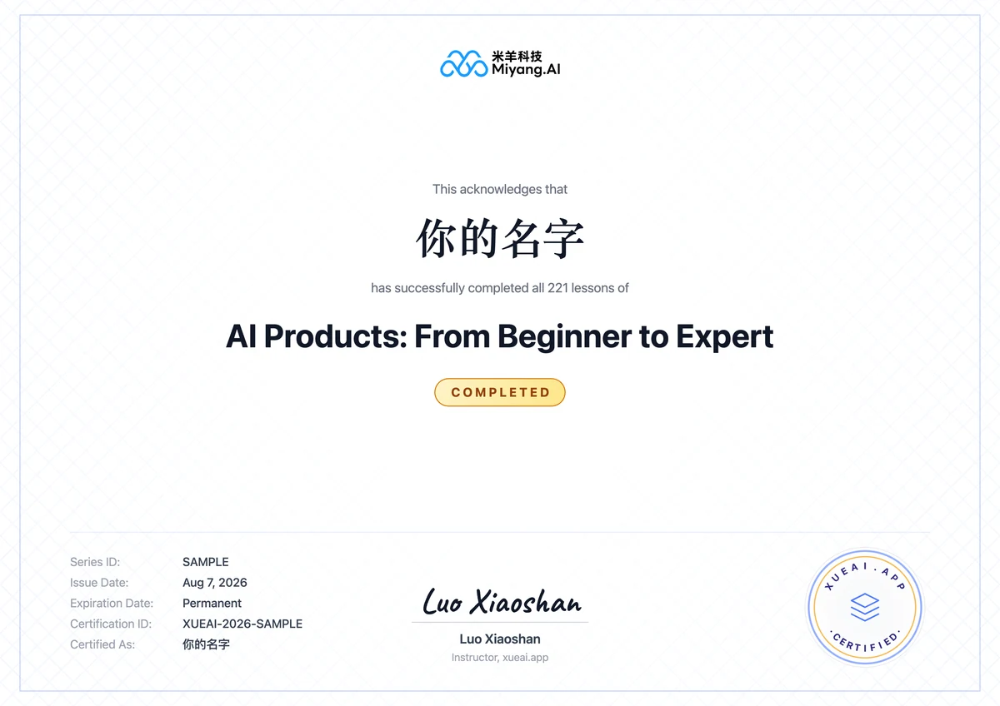

Understand AI from First Principles
Ship your own AI product
Build a solid foundation first — then go from principles to shipping.
Learn how to design, build, and commercialize AI products — and create real value with AI.
153Core Topics
442Knowledge Points
240+Interactive Demos
Course progress
All free
Mark each lesson "Got it"
Certificate when you finish
—
